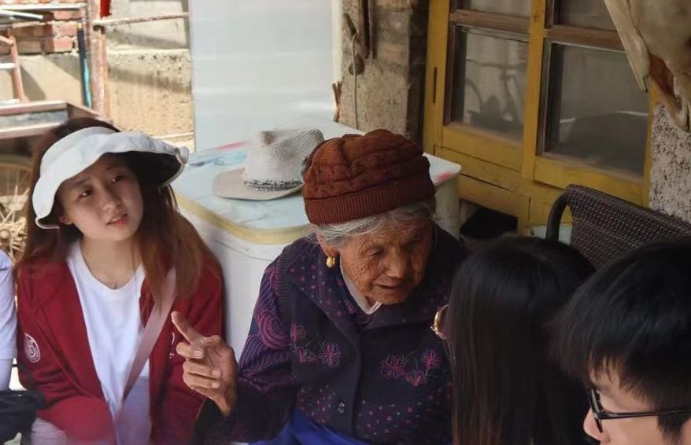
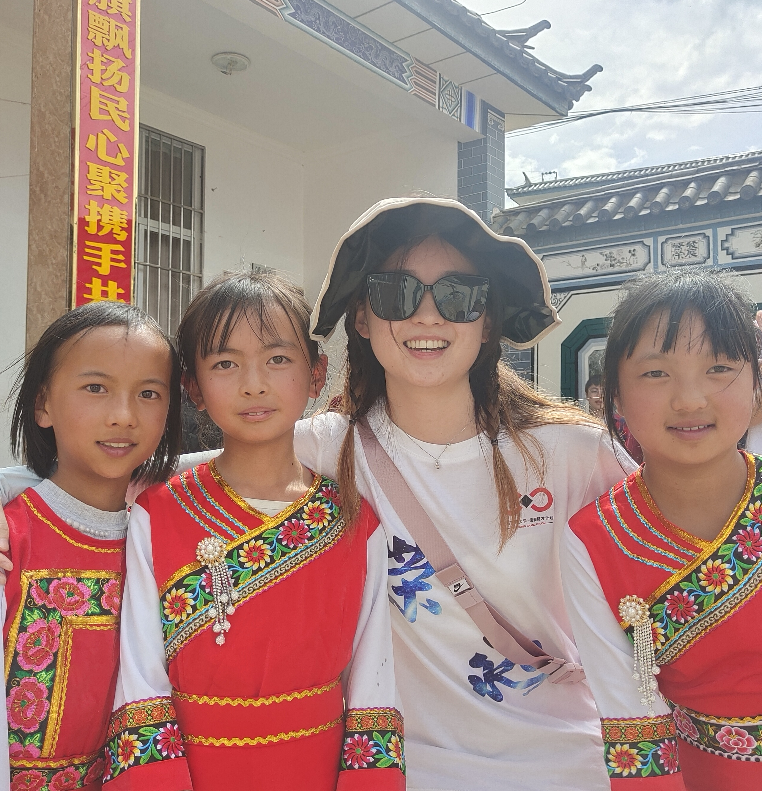
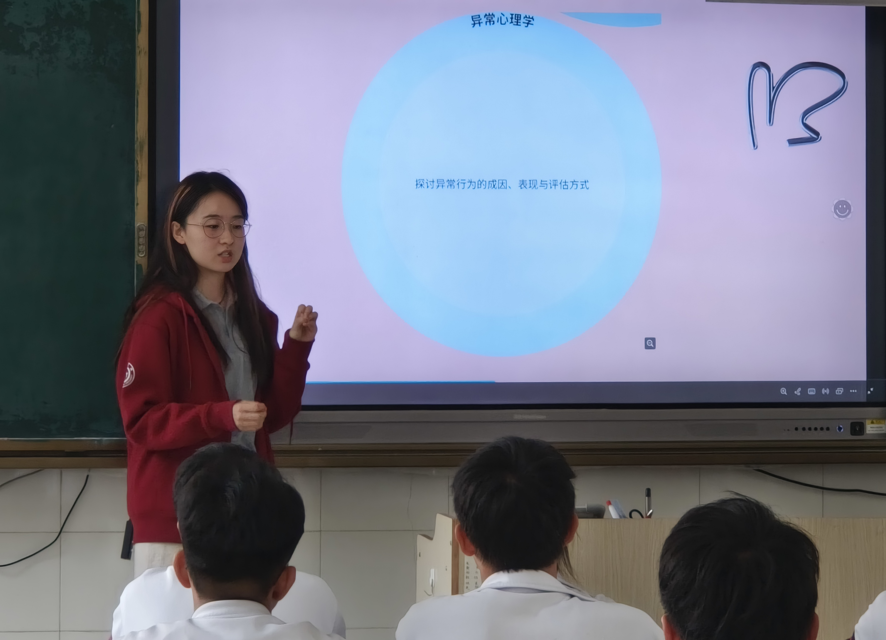
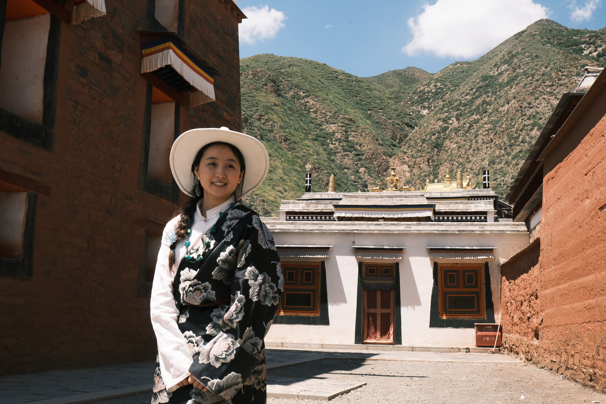
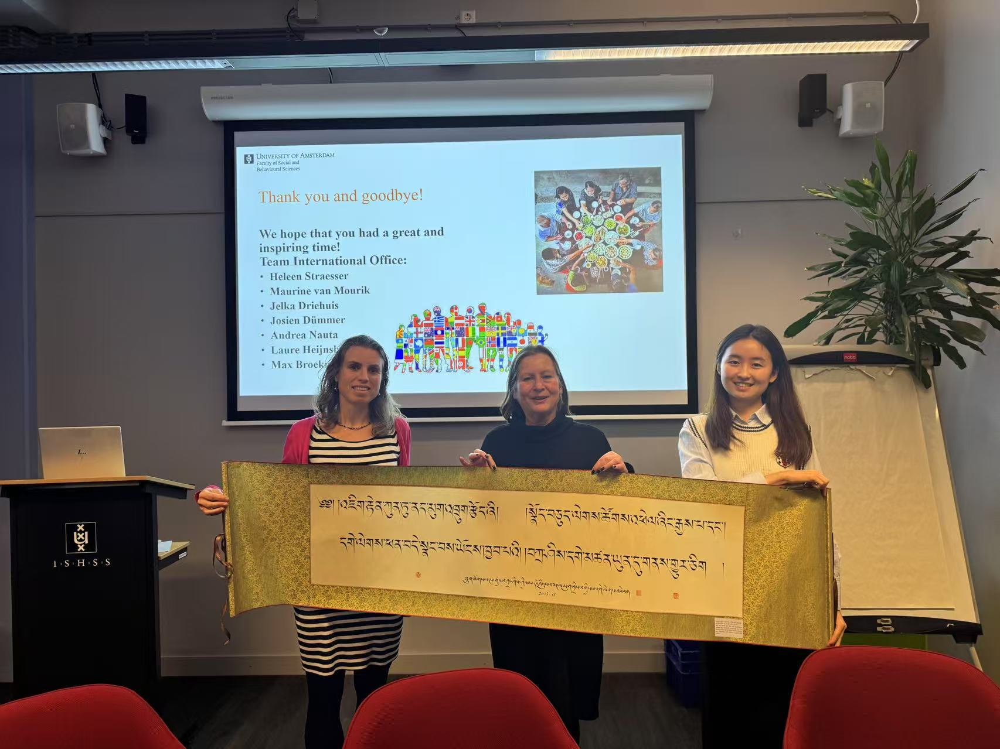
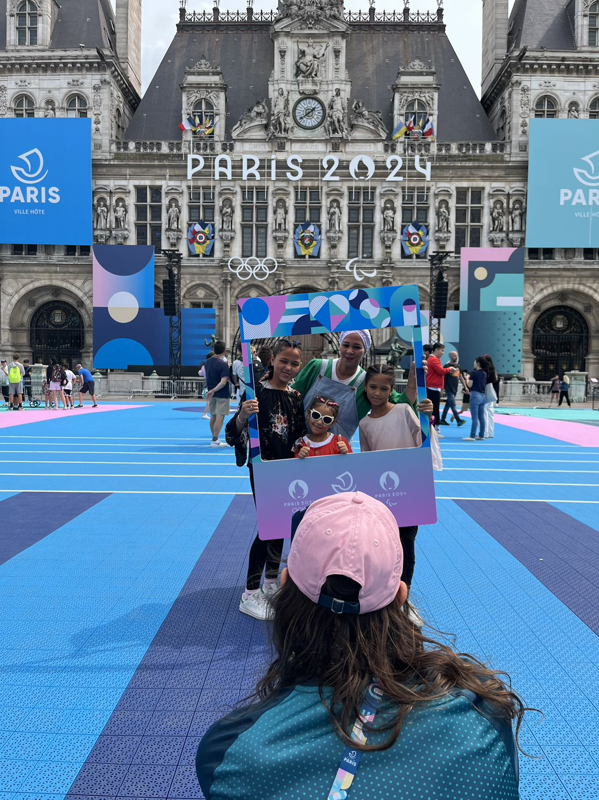
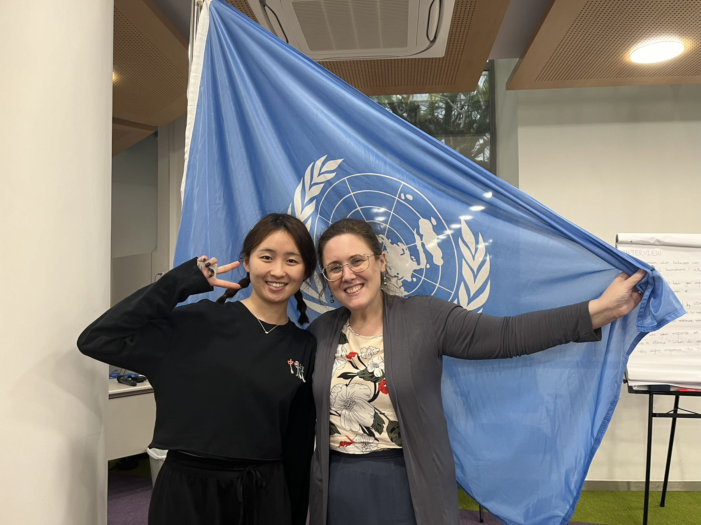
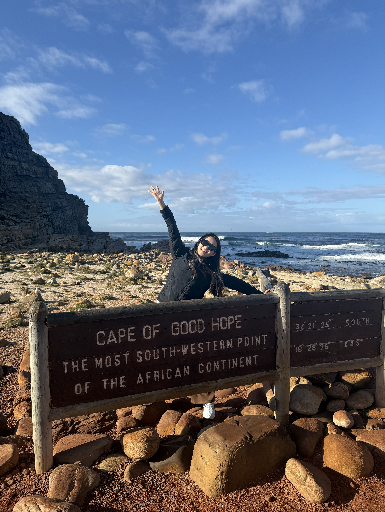
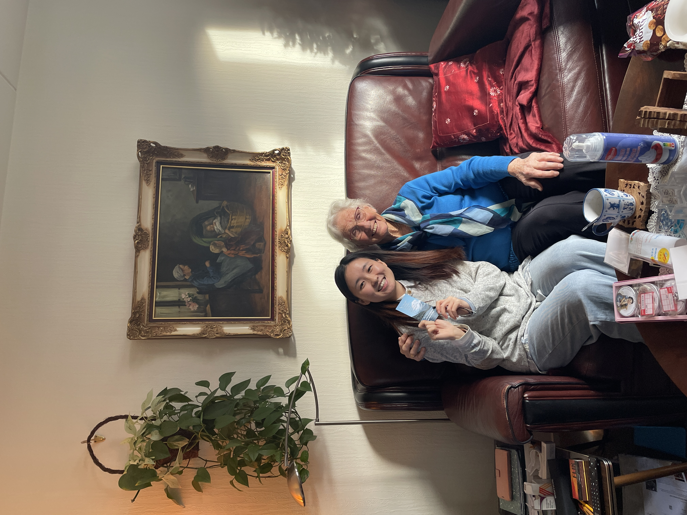

About Me
Hi, I’m Qixuan, and I also go by Cherry.
Welcome to my website!
I study how emerging media technologies shape social perception—particularly how media cues influence impressions of individuals and stereotypes about social groups.

I am a Master’s student in Emerging Media Studies at Boston University.
My broader interest lies at the intersection of media psychology, political communication,
and human–technology interaction.
Before joining Boston University, I studied at the School of Media and
Communication at Shanghai Jiao Tong University (SJTU). My undergraduate research
introduced me to the questions that continue to guide my work: how media
environments shape identity, social judgment, and communication across
group boundaries. My long-term goal is to become a communication scholar.
Research
-
Research Agenda
My research examines how emerging media technologies shape the ways people perceive and evaluate social others. At the individual level, I study how technological and message cues influence impression formation and stereotype-based judgment. At the societal level, I investigate how representations of social groups are produced, circulated, and contested in digital public discourse.
Across these levels, I ask when mediated communication reproduces existing social inequalities and when it creates opportunities to disrupt them. I address these questions through experimental, computational, survey, and qualitative methods.
Question 1 · Impression FormationHow do technological and message cues shape perceptions of individuals?
Question 2 · Stereotype Formation and CirculationHow are representations of social groups constructed and circulated through media environments?
Question 3 · Social ConsequencesWhen do mediated perceptions reproduce or disrupt social inequality?
-
Long-Term Goal
My long-term goal is to become a communication scholar who connects psychological mechanisms with broader social and communicative processes. I hope to explain how emerging technologies shape perceptions of individuals and groups—and when those technologies reinforce or disrupt social inequality.
-
Doctoral Training
-
Theoretical Contribution
-
Social Contribution
-
I welcome conversations and collaborations with researchers across disciplines. If you would like to discuss shared research interests, please reach out: hqx123@bu.edu .
-
Flagship ProjectMaster’s Thesis
AI-Mediated Impressions of Women Political Candidates
Research QuestionHow do AI source cues interact with gendered warmth and competence information to shape political impression formation?
Theoretical FrameworkStereotype Content Model · Machine Heuristic · Technology-Mediated Communication
MethodOnline experiment · Candidate evaluation · Reaction-time measurement
OverviewMy master’s thesis examines how news emphasis on warmth and competence, AI-versus-human source cues, and AI-related heuristics jointly shape impressions of women political candidates. The study distinguishes between audiences’ explicit evaluations and the accessibility of stereotype-related attitudes.
StatusData collection and manuscript preparation
-
Current Research at Boston University
-
Research 1 · Gendered Evaluations in AI-Mediated Communication
In a related project, I examine how people evaluate women engineering professionals on social media. The study compares evaluations of women and men and tests whether content attributed to AI creators produces different judgments from content attributed to human authors. The project measures implicit attitudes using the Implicit Association Test alongside explicit evaluations.
-
Research 2 · Platformed Perceptions of Chinese International Students
I lead a computational project examining how stereotypes and threat narratives about Chinese international students are produced and circulated in U.S. online discourse. Through human coding and computational text analysis, the project identifies recurring frames related to prejudice, national identity, and intergroup perception and traces how these representations develop over time.
-
Previous Research at Shanghai Jiao Tong University
These earlier and collaborative projects provided the conceptual and methodological foundations for my current research program.
-
Related Project 1 · Platformed Motherhood on Chinese Social Media
Drawing on interviews with women working in China’s short-video industry, I examined how mom influencers pursue entrepreneurial opportunities while navigating platform precarity and gendered expectations of care, femininity, and motherhood. This work first led me to consider how platforms structure the conditions under which social identities become visible, recognizable, and evaluated.
-
Related Project 2 · Emerging Technology and Entertainment Experiences
My earlier collaborative research examined how emerging media experiences, including immersive heritage experiences and esports participation, contribute to entertainment gratifications and psychological well-being. I contributed to survey design, data collection, statistical analysis, and manuscript development.
These projects provided my foundation in research methods while broadening my understanding of the positive outcomes of mediated experience.
-
Research Methods
I use multiple methods to connect individual psychological mechanisms with broader communicative processes.
ExperimentalOnline and laboratory experiments · Reaction-time measures · Implicit attitudes · Psychophysiological responses
Qualtrics · PsychoPy · Pavlovia · iMotions · Shimmer GSR+ComputationalComputational text analysis · Topic modeling · Sentiment analysis · Time-series analysis
Python · RSurveySurvey design · Regression analysis · Structural equation modeling
Qualtrics · SPSS · Stata · R · AMOSQualitativeIn-depth interviews · Focus groups · Grounded theory · Thematic analysis
NVivo
Publications
-
Peer-Reviewed Journal Articles
-
Peer-Reviewed Conference Presentations
-
For manuscript under review, in preperation, and other details, please see my full CV.
Teaching & Service
-
Teaching
-
Conference Service
-
Community Research and Volunteering




Travel & Inspiration
I am from Gannan Tibetan Autonomous Prefecture (甘南藏族自治州), a culturally diverse region on the northeastern edge of the Tibetan Plateau in China. Growing up where Tibetan and Han traditions coexist in everyday life made me curious about how people from different backgrounds communicate, interpret one another, and build shared understanding.

-
Exploring Europe
During my exchange semester in the Netherlands in 2024, I traveled across the country and visited France, Germany, Switzerland, Norway, Spain, Portugal, and Belgium. Meeting people from different cultural and social backgrounds strengthened my interest in group perception and communication.
These experiences made the questions behind my research more personal: How do people understand those they perceive as different? How do stereotypes create distance and conflict? How might communication foster recognition, empathy, and mutual understanding?





More journeys—and more conversations—to come.